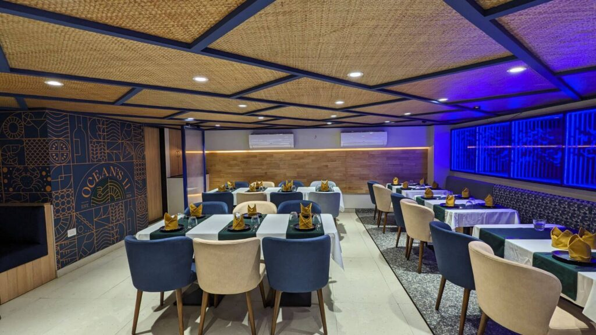
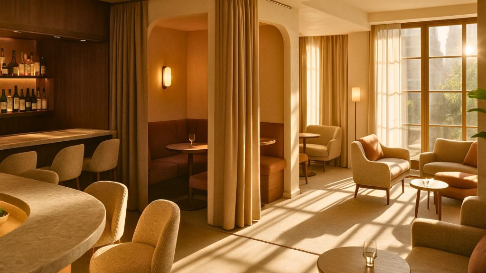

The 2025 luxury bar playbook (quick read)
High-end bars this year are less “theme park,” more sensory theatre—rich materials, precise acoustics, layered lighting, and storytelling that feels intimate, not loud. Here are the 12 trends we’re weaving into premium cocktail rooms and hotel lounges right now.
1) Sculptural, layered lighting (with scene control)
Luxury is lighting you feel before you notice it. Expect sculptural pendants, concealed grazers for stone/texture, and DMX/scene presets that shift from aperitivo glow to midnight drama. 2025 hospitality guidance points to richer materiality and layered, guest-centric environments—lighting is the glue that makes it read luxe.
How to use it: Specify 3 layers minimum (ambient, task, accent), dimmable to 1%, warm dim (3000K→2200K), and glare-free optics at the backbar.

2) The backbar as art (storytelling & spectacle)
Award juries are rewarding bars that turn the backbar into a narrative sculpture—think custom shelving, illuminated apothecary vials, kinetic elements, or archival objects tied to the brand’s origin story. Recent “Best Bar Design” citations celebrate exactly this blend of storytelling + escapism.
How to use it: Treat the backbar as your hero wall. Use one statement material and one motion/light element; keep labels front-lit and glassware edge-lit. 3) Texture-rich, couture materiality
The era of beige minimalism is out. 2025 skews to layered textures, bold color accents, and sculptural forms—deep greens, rich golds, and jewel tones set against tactile stone, patinated metal, and boucle/leather.
How to use it: Pair one “showpiece” stone (terrazzo, travertine, marble) with brushed brass or smoked bronze; add ribbed or fluted details on fronts for shadow play.

4) Biophilic calm (nature, but make it luxe)
Nature—done with restraint—reduces stress and extends dwell time. Research in hospitality shows biophilic cues (natural forms, plants, daylight, water) can lift wellbeing and engagement.
How to use it: Go for moss panels behind banquettes, stone planters, or a single sculptural tree under a skylight. Choose matte finishes and warm woods for tactility.
5) Acoustic luxury (privacy without hush)
Nothing kills a ₹1,500 cocktail faster than a 90 dB roar. Acoustic guidance for restaurants/bars shows perceived loudness doubles with every 10 dB—so material strategy matters.
How to use it: Hide absorbers in the ceiling (felt baffles, micro-perforated panels), upholster booth backs, and break up parallel hard surfaces. Plan “soft corridors” around high-top clusters to contain chatter.
6) Intimate “micro-venues” inside the bar
From omakase-style cocktail counters to curtained nooks, guests want rooms-within-rooms—VIP intimacy without a velvet-rope vibe. Split the floor into vignettes: lounge, high-top conversation, tasting counter. Recent hospitality trend roundups highlight experiential zoning over one big hall.
How to use it: Use low partitions (planters, shelving screens), varied seat heights, and adjustable light to signal “this is a different experience.”

7) Quiet tech: hospitality-first, not gadget-first
In 2025, tech supports service and personalisation (smart lighting scenes, invisible speakers, discreet POS)—but stays out of the selfie. Industry outlooks emphasize experience and personalization, not gimmicks.
How to use it: Conceal charging, run staff wearables for call buttons, keep screens off the guest sightline, and sync BGM volume to occupancy.
8) No/Low-alcohol shapes the room
Moderation is mainstream. IWSR forecasts +4% CAGR for no/low 2024–2028 (with no-alcohol at +7%), pushing programs—and design—to spotlight mixology craft beyond spirits.
How to use it: Give Zero-Proof a dedicated “lab” bay on the backbar (fermentation jars, tea concentrates). Create daylight-adjacent seating clusters for earlier, wellness-oriented visits.

9) Sustainable opulence (circular, local, durable)
Sustainable → spartan. 2025 hospitality commentary stresses circular choices, local craft, and durability as the new luxury baseline. Engineered terrazzo and recycled metals are moving into premium specs.
How to use it: FSC wood, low-VOC finishes, removable millwork, modular bases you can re-skin later. In India, consider Kota/Quartzite tops with brass trims for longevity.
10) Performance upholstery & luxe tactility
Performance fabrics that resist stains and wear let you spec paler, richer textures without maintenance pain—aligning with the broader 2025 push for comfort + longevity in hospitality.
How to use it: Mix leather (high-touch zones) with performance chenille/bouclé (low-touch), and specify Martindale >50k on banquettes.

11) Signature scent & superior air quality
Scent is becoming a subtle signature for premium spaces, with hospitality experts pointing to measurable loyalty and memory effects—balanced with ventilation standards that keep IAQ high.
How to use it: One restrained house note in the entry and lounge; ramp down near food. Design according to ASHRAE 62 principles and avoid relying on ventilation to mitigate smoke where regulations restrict it.

12) The “five-hour bar”: layouts that flex from 6pm to 11pm
Hospitality designers predict multi-mood, personality-driven spaces—meaning your plan must flex. Use modular booths, flip-top poseur tables, and rolling service stations to pivot from pre-dinner to late-night service smoothly.
How to use it: Build in parked positions for mobile pieces; pre-set two lighting scenes and one music profile per daypart.
India notes (fast wins)
- Local materials, global finish: Kota/Khaprail/tandoor brick as accents with modern lighting = timeless + maintainable.
- Regulatory sanity: Check state excise display rules for backbar visibility before final shelving design.
- Heat, dust, monsoon: If you have an indoor–outdoor edge, specify marine-grade finishes and IP-rated fixtures.
FAQs
What colours can work best for a luxury bar in 2025?
Jewel tones (deep greens, rich golds, purples) layered with textured neutrals read premium and photograph beautifully.
How important is acoustics?
Critical—every 10 dB increase is perceived as twice as loud; treat ceilings, booth backs, and wall panels early.
Do I need a no/low-alcohol station?
If your audience includes wellness-minded guests (Gen Z/younger millennials), yes—demand is rising through 2028.
SprintCo approach (why brands call us)
We design bars as operational theatres: layered light, tuned acoustics, narrative backbars—and modular components that install fast and re-skin easily as you scale. If you planning to design your next bar, contact SprintCo today.
Pan-India presence | 3500+ F&B spaces delivered — Visit SprintCo’s Website